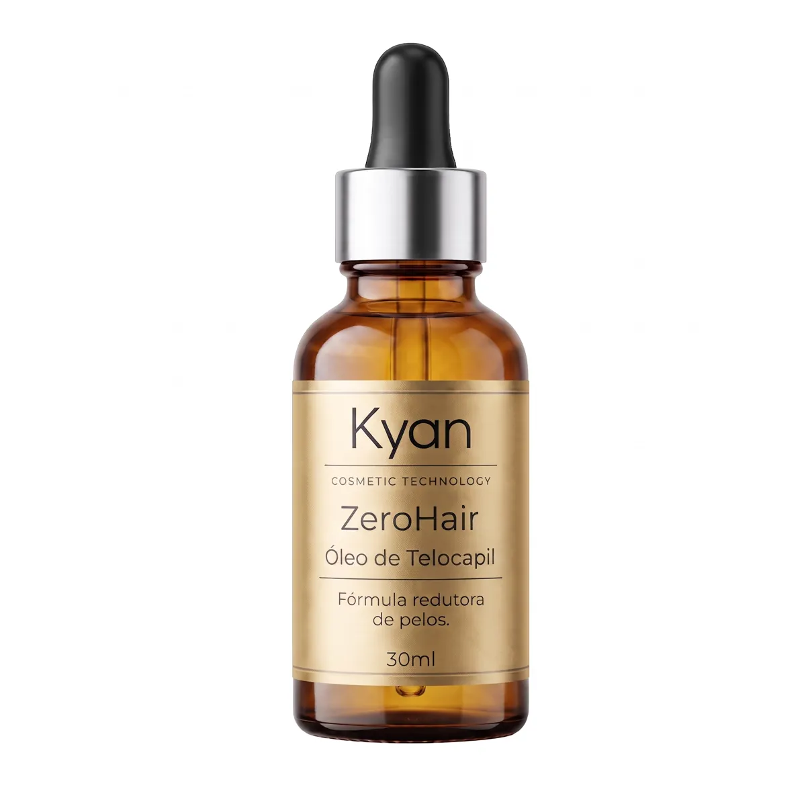
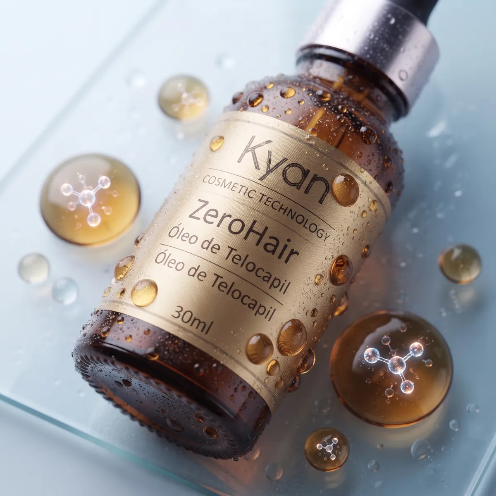
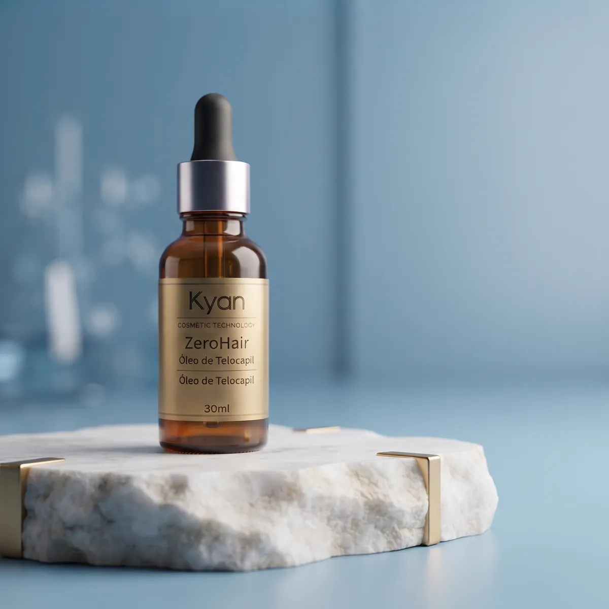

-25%OFF
Kit Inicial
1 frasco · 30 ml no total
- 1 frasco de 30 ml
- Conta-gotas dosador
- Ideal para testar e conhecer
Aplique algumas gotas logo após a cera e, com o uso contínuo, ajude a deixar os pelos mais finos e a espaçar as próximas depilações.*

Depilar toda semana cansa e irrita a pele. O ZeroHair foi criado para o momento logo depois da depilação, quando o pelo foi retirado pela raiz e a pele está pronta para receber cuidado.
Com o uso contínuo, a fórmula com Telocapil ajuda a reduzir a aparência dos pelos: eles tendem a voltar mais finos e mais espaçados. Ao mesmo tempo, a base oleosa acalma e hidrata a pele recém-depilada.*
Escolher meu kit redutor de pelos
Seis motivos que fazem do Óleo de Telocapil ZeroHair um aliado entre uma depilação e outra.
Com o uso após cada depilação, os fios tendem a voltar mais finos e claros.*
Menos pelos visíveis entre uma sessão e outra significa menos idas à cera.*
A base oleosa devolve maciez à pele logo depois da cera.
Textura leve que absorve rápido, sem deixar a pele pegajosa.
Você usa só o necessário em cada região, sem desperdício.
O frasco escuro protege a fórmula da luz e preserva o produto.
* Resultados graduais, que dependem do uso contínuo, do tipo de pelo e da região. Variam de pessoa para pessoa.
Pronta para espaçar as depilações?
Algumas gotas, uma massagem leve e pronto: o ZeroHair entra na rotina logo depois da depilação. O frasco de vidro âmbar protege a fórmula da luz e o conta-gotas dosa só o que a região precisa.
Use cera, pinça ou linha. O produto age melhor quando o pelo sai com a raiz.
Retire os resíduos de cera e seque a região com uma toalha limpa.
Pingue o ZeroHair com o conta-gotas e massageie até a pele absorver.
A constância traz o resultado. Mantenha o uso por várias depilações seguidas.
Não aplique em mucosas, perto dos olhos ou sobre pele ferida. Faça um teste em pequena área antes do primeiro uso.

Telocapil é um ativo cosmético desenvolvido pela Provital, laboratório espanhol de ingredientes. Ele é obtido das folhas e flores da Myrica cerifera, planta conhecida como murta-de-cera.
No teste do fabricante do ativo, 15 voluntárias aplicaram Telocapil em uma perna e um placebo na outra, duas vezes ao dia, por 63 dias.
Dados do estudo in vivo da Provital com o ativo Telocapil a 2%, publicados no material técnico do ingrediente. São resultados do ativo, não do produto acabado ZeroHair. Os resultados variam de pessoa para pessoa.
Sempre tive muita questão com o buço e precisava depilar com frequência, o que irritava bastante a minha pele sensível. Comecei a usar o ZeroHair há pouco mais de um mês e o resultado tem sido bem positivo. Os pelos estão crescendo visivelmente mais devagar e mais finos, o que já reduziu bastante a vermelhidão que eu tinha depois de tirar. É preciso ter paciência e usar certinho, mas valeu a pena.
Comprei o sérum principalmente para usar na região da virilha, buscando espaçar mais as depilações e evitar aquele incômodo de pelos encravados. Estou usando há cerca de seis semanas e notei que o crescimento desacelerou bem. Além disso, a pele não fica irritada com a aplicação. Não é algo definitivo de imediato, mas cumpre muito bem a proposta de deixar o pelo mais fino e ralo.
Uso o ZeroHair na virilha e nas axilas. O produto tem uma absorção rápida e não tem cheiro forte, o que é ótimo para essas áreas mais sensíveis. Depois de um mês de uso contínuo, percebi que os pelos estão demorando mais para aparecer e nascendo mais macios, o que diminuiu bastante a foliculite que me incomodava. Achei um bom investimento para a rotina de cuidados.
Opiniões de clientes publicadas em marketplaces. Os resultados variam de pessoa para pessoa.
Quanto mais frascos, menor o preço de cada um. Como o resultado vem do uso contínuo, os kits maiores acompanham mais depilações.
1 frasco · 30 ml no total
2 frascos · 60 ml no total
3 frascos · 90 ml no total
Se em até 7 dias depois de receber você desistir da compra, devolvemos o valor pago, como garante o Código de Defesa do Consumidor. É só escrever para atendimento.phnegociosdigitais@gmail.com.
Ler a Política de Troca e ReembolsoÉ um óleo cosmético da Kyan Cosmetic Technology com Telocapil, ativo usado em fórmulas redutoras de pelos. Ele é aplicado logo após a depilação, com o folículo aberto, para ajudar a deixar os pelos mais finos e a espaçar as próximas depilações com o uso contínuo.
Depile a região com cera, pinça ou linha (métodos que retiram o pelo pela raiz). Limpe e seque a pele, aplique algumas gotas com o conta-gotas e massageie até absorver. Repita a cada depilação. Evite usar sobre pele ferida ou irritada.
Pode ser aplicado, mas o óleo de telocapil costuma render melhor quando o pelo é retirado pela raiz, como na cera, porque o folículo fica exposto para receber o produto.
Os resultados aparecem de forma gradual e dependem do uso contínuo, do tipo de pelo, da região e da frequência das depilações. Por isso recomendamos manter o uso por várias depilações seguidas. Os resultados variam de pessoa para pessoa.
O ZeroHair foi pensado para áreas do corpo como pernas, axilas, braços e virilha (área externa). Não aplique em mucosas, próximo aos olhos ou sobre pele lesionada. Para o rosto e áreas sensíveis, faça antes um teste em uma pequena área e aguarde 24 horas.
Gestantes, lactantes e pessoas com pele sensível ou alguma condição dermatológica devem consultar um médico antes de usar qualquer produto cosmético novo.
O Kit Inicial serve para conhecer o produto. Como o resultado depende do uso contínuo, os kits de 2 e 3 frascos acompanham mais depilações seguidas e saem mais em conta: no Kit Tratamento cada frasco sai por R$ 114,50.
Envio com código de rastreio. Prazo de postagem: após a confirmação do pagamento. Você recebe o código de rastreio por e-mail assim que o pedido é enviado.
Sim. Você tem 7 dias corridos a partir do recebimento para desistir da compra, conforme o artigo 49 do Código de Defesa do Consumidor. Veja os detalhes na Política de Troca e Reembolso.
O pagamento é processado pela RXPAY em ambiente seguro. Você pode pagar com Pix, boleto ou cartão de crédito em até 12x (os juros do parcelamento são calculados no checkout).
Garanta o Óleo de Telocapil ZeroHair com 2 frascos por R$ 229,00 e aplique já na próxima depilação.